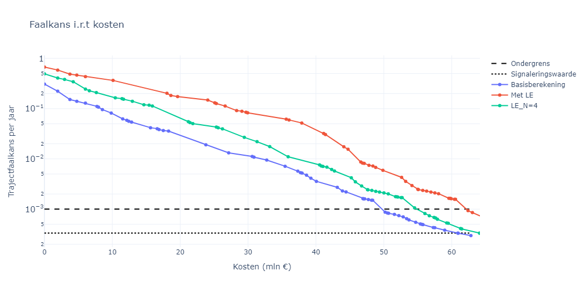

Bepaling van trajectfaalkansen#
Een belangrijke basis voor de veiligheidsrendementanalyses is de bepaling van de effecten van maatregelen op trajectniveau. Daarvoor worden trajectfaalkansen bepaald. Hierbij wordt voortgebouwd op de assemblageregels zoals die gehanteerd worden in het WBI/BOI, aangevuld met enkele praktische inzichten.
Binnen het assemblageprotocol geldt in principe dat voor de faalkans 2 gecombineerde waarden worden bepaald voor de trajectfaalkans van een mechanisme:
Hierbij correspondeert \(P_1\) met de kans bij onafhankelijkheid tussen vakken, dit is de theoretische bovengrens van de kans. \(P_2\) correspondeert met de kans bij (sterke) afhankelijkheid tussen vakken, waarbij \(N_\mathrm{mech}\) een factor is om onafhankelijke delen (bijv. als gevolg van onafhankelijke windrichtingen) in rekening te brengen. In de praktijk geldt daarbij dat \(P_1\) met name van toepassing is bij geotechnische mechanismen, waar sterke onafhankelijkheid is door de grote ruimtelijke variabiliteit. En \(P_2\) geldt bij belastinggedreven mechanismen zoals bekledingen en overloop/overslag. In de rekenmethode van de VRTOOL wordt daarom standaard \(P_1\) gehanteerd voor piping en binnenwaartse stabiliteit, en \(P_2\) voor bekledingen en overloop/overslag. Dit is in lijn met de meest recente voorschriften voor assemblage uit het BOI.
\(P_1\) of \(P_2\) , maakt het uit?
Een belangrijke vraag bij bovenstaande is in hoeverre het uitmaakt of we \(P_1\) of \(P_2\) hanteren. In onderstaande figuur is een illustratie weergegeven voor een systeem van 10 dijkvakken waarbij links alle vakken een betrouwbaarheidsindex van 3.5 hebben, en rechts er 1 van de dijkvakken een betrouwbaarheidsindex van 2.5 heeft. Te zien is dat rechts de beide grenzen (hier geldt dat \(N_\mathrm{mech}=1\)) voor een heel groot bereik goed werken, en dat dit eigenlijk in de rechtersituatie ook zo is, met de toevoeging dat de waarden veel dichter bij elkaar liggen. In de praktijk komen we zeker vóór een versterking veel situaties tegen zoals rechts, waarbij er enkele vakken zeer dominant zijn. Beide grenzen liggen dan dicht bij elkaar. Na versterking wordt dit anders en zal de linkerfiguur meer van toepassing zijn. Maar ook dan geldt dat voor situaties met en zonder sterke afhankelijkheid tussen falen op verschillende vakken er 1 van beide grenzen duidelijk beter is. Op basis hiervan is de keuze gemaakt om voor de VRTOOL standaard \(P_1\) te hanteren voor piping en stabiliteit binnenwaarts, en \(P_2\) voor bekledingen en overloop/overslag.
Situatie met 10 dijkvakken waarbij links alle vakken een betrouwbaarheidsindex van 3.5 hebben, en rechts 1 van de dijkvakken een betrouwbaarheidsindex van 2.5 heeft, met verschillende correlatie \(\rho\) (horizontale as). Stippen geven de grenzen \(P_1\) en \(P_2\) aan.
{kind=link}
{kind=link}
In de uitwerking daarvan zijn 2 belangrijke aandachtspunten:
De omgang met \(N_\mathrm{mech}\) voor mechanismen met een sterke afhankelijkheid tussen vakken.
De relatie tussen doorsnede- en vakfaalkansen voor mechanismen met potentiele lengte-effecten binnen vakken.
Deze zijn in de volgende paragrafen nader toegelicht.
De omgang met \(N_\mathrm{mech}\)#
De factor \(N_\mathrm{mech}\) brengt in rekening dat er zich in trajecten ongecorreleerde delen kunnen bevinden. Deze factoren zijn in het verleden op basis van grofstoffelijke redeneringen voor verschillende trajecten bepaald en opgenomen in het OI2014. Hiermee wordt rekening gehouden met kleine variaties in sterkte, maar met name de aanwezigheid van meerdere dominante orientaties. In dat laatste geval zijn de dominante belastingsituaties onafhankelijk en met de factor \(N_\mathrm{mech}\) kan dit in rekening worden gebracht. Daarbij wordt wel automatisch aangenomen dat alle delen van het traject ook daadwerkelijk bijdragen, en dat is niet altijd het geval. Uit een achtergrondstudie (zie bijlage H, sectie 3.3) naar lengte-effecten voor het innovatieproject voor gras op zand blijkt dat dit effect in praktische situaties relatief meevalt.
Binnen veiligheidsrendement is er daarom voor gekozen om de factor \(N_\mathrm{mech}\) gelijk te stellen aan 1, waardoor het echt een zuivere ondergrens is. Overigens zal de invloed van deze aanname op de resultaten relatief beperkt zijn: voor overloop/overslag is deze factor meestal al 1, voor steenbekledingen iets groter maar daar valt dit weg in de stappen die we hanteren voor verschillende steendiktes, en de onzekerheden in het gehanteerde sterktemodel. E.e.a. is ook in lijn met de recente rode draad van het Adviesteam Dijkontwerp, waar wordt aanbevolen het maximum van de kansen te nemen, en waar nodig de som van de maxima per orientatie.
De relatie tussen doorsnede- en vakfaalkansen#
Bij een nette assemblage (of combinatie in bijv. Hydra-Ring) van doorsnedeberekeningen geldt dat langere vakken leiden tot een groter lengte-effect: ook binnen vakken speelt het lengte-effect een rol. In het WBI-2017 is dit op verschillende manieren meegenomen, maar dit was niet altijd correct geïmplementeerd. Concreet werden bijvoorbeeld de factoren voor gevoelige lengte op trajectniveau (3,3% voor stabiliteit binnenwaarts) toegepast op vakniveau (zie bijvoorbeeld deze notitie). In de Handleiding Overstromingskansanalyse van het BOI zijn daarom drie (inhoudelijk correcte) opties gegeven:
Wanneer aantoonbaar een voldoende conservatieve doorsnede is gekozen hoeft binnen een dijkvak niet te worden opgeschaald (\(N_\mathrm{vak}=1\)).
Een beheerder kan onderbouwen dat op een dijkvak een lagere gevoelige lengte (\(a_\mathrm{vak}\)) dan 1 kan worden gehanteerd.
Wanneer dit niet wordt onderbouwd geldt dat \(a_\mathrm{vak}=1\).
De meest nette versie is daarbij optie 2. In een studie voor dijkversterkingsproject SAFE is deze variant expliciet uitgewerkt voor een aantal dijkvakken. Hieruit blijkt dat opschalen met de aanname \(a_\mathrm{vak}=1\) (dus optie 3) doorgaans veel te conservatief is, met name voor stabiliteit binnenwaarts. Lokale variaties in geometrie en ondergrond leiden al snel tot orde groottes andere faalkansen en daarmee een lagere gevoelige lengte. Uit de daar doorgerekende cases voor verschillende vakken blijkt dat voor stabiliteit binnenwaarts de vakkans 3 tot 6 keer groter is dan het vak als geheel (gevoelige lengte doorgaans tussen de 30 en 50% op vakniveau). Tegelijkertijd blijkt dat doorsnede-berekeningen vaak zeer conservatief zijn ingestoken, en dat de onzekerheid daarin vele malen groter is. Voor piping zijn, door de wat grotere onafhankelijke strekkinglengte (b=300 meter), de verschillen per definitie kleiner.
Omdat de benodigde gegevens voor een uitwerking van optie 2 niet voor handen zijn, én de berekeningen op doorsnede-niveau in de beoordeling conservatief waren is er voor gekozen om in veiligheidsrendementanalyses uit te gaan van optie 1. Wanneer de gegevens voor optie 2 wel voor handen zijn is deze aanpak echter aan te bevelen.
Optie 2 zou daarom de meest correcte aanpak zijn. In principe is dat goed mogelijk binnen de aanpak, maar gezien de doorgaans beschikbare invoer nu niet doorgevoerd. Omwille van het bekende conservatisme in doorsnede-berekeningen is daarom optie 1 verkozen boven optie 3, die in sommige gevallen tot (nog) onrealistischer trajectfaalkansen leidt. In principe zou met name op langere vakken deze keuze tot wat andere maatregelen kunnen leiden omdat hier het veiligheidstekort op vakniveau omhoog gaat, en daarmee ook het veiligheidsrendement van maatregelen. In onderstaande figuur is een vergelijking weergegeven tussen een scenario met opschaling binnen het vak (\(a=1\)) en zonder opschaling, als middenvariant is een variant weergegeven waarbij wordt opgeschaald, maar deze waarde gemaximeerd is op \(N_\mathrm{vak}=4\). Te zien is dat grotere lengte-effecten zoals verwacht tot hogere kosten leiden. Het relatieve verschil tussen veiligheidsrendement en het OI2014v4 wordt door opschaling dus iets kleiner, maar opgemerkt moet worden dat volledige opschaling leidt tot zeer onrealistische faalkansen (in dit geval ca. 85% faalkans per jaar).
{kind=link}

Vergelijking van trajectfaalkansen met en zonder opschaling van lengte-effecten binnen vakken voor traject 10-1.#
Overigens moet worden opgemerkt dat het hanteren van de standaard lengte-effectfactoren uit het OI2014v4 voor stabiliteit binnenwaarts, gecombineerd met optie 3, in sommige gevallen niet zal leiden tot een resultaat wat voldoet aan de trajecteis. Doordat de gevoelige fractie van het traject gelijk wordt gesteld aan 3,3%, geldt immers dat wanneer een dijkvak een lengte heeft groter dan 3,3% van de trajectlengte én een faalkans gelijk aan de doorsnede-eis, de trajectfaalkans per definitie hoger wordt dan de eis. Hoewel deze situatie in de praktijk niet zo realistisch is, laat dit wel de noodzaak zien van het helder uitwerken van een systematiek om op een gebalanceerde manier lengte-effecten in rekening te brengen in de bepaling van trajectfaalkansen in ontwerp en beoordeling. Veiligheidsrendement geeft daar invulling aan.